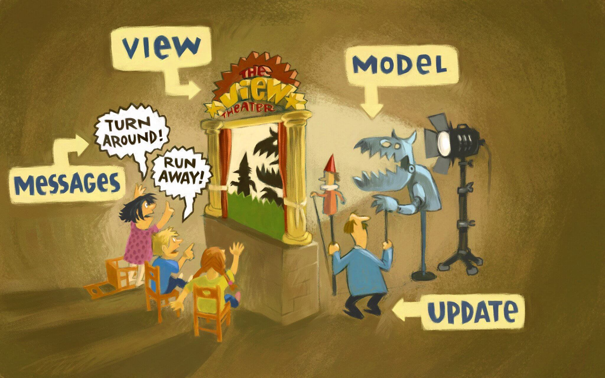
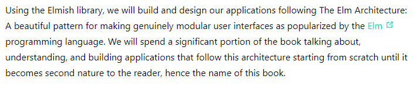

Functional Programming
🐱‍💻
Clojure

(defn add-joke-about-parentheses [{title :title from :from id :id}]
(let [url (str "https://" from "/" id)]
(str title " from " from " - " url)))
(add-joke-about-parentheses {:title "Lisp Cycles"
:from "xkcd.com"
:id 297})
Overview
- ⛰️ High level overview
- 🌳 FP Languages
- 🤯 How does this help?
Let's talk about functions!
🥳
Higher Order Functions
👩‍🎓
Functions are able to return a function as its result
const greeter = (greeting) => {
return (name) => `${greeting} ${name}`;
}
const hi = greeter("Hi! My name is");
hi("John Doe"); // "Hi! My name is John Doe"
Functions are able to take one or more functions as arguments
const person = { first: "John", last: "Doe", age: 27 };
const getName = d => `${d.first} ${d.last}`;
const getAge = d => d.age;
const printFn = (fn, data) => {
console.log(fn(data));
}
printFn(getName, person); // John Doe
printFn(getAge, person); // 27
Built in examples in JavaScript
const array = [1, 2, 3, 4, 5];
const square = i => i * i;
const isEven = i => i % 2 === 0;
const print = i => console.log(i);
array
.map(square)
.filter(isEven)
.forEach(print);
Pure functions
😇
The function has no side effects
The function returned value is the same for the same input
Basic Pure Function
and
Impure Functions
and
Partial Function Application
🧩
Partial function application is the ability to take a function with many parameters and apply arguments to some of the parameters to create a new function.
To
One of many use cases
Functional Programming Languages
📖
Adding a lot more functional programming aspects
Restrictions built into the language
Elm
Elm is
- 🕸️ For building web applications
- 👩‍💻 ML based language, Like Haskell, OCaml, and F#
- 😇 Purely functional
- 🪨 Immutable
- ✍️ Static typed
The Elm Architecture
Redux
https://redux.js.org/understanding/history-and-design/prior-art#elm
Vue
https://vuejs.org/v2/guide/comparison.html#Scale
F#
https://zaid-ajaj.github.io/the-elmish-book/#/
Typed and Partial Function Application🙌
Pipes 🏄‍♀️
3 -> a -> b -> c
In Elm this can be write like
ES Proposal for Pipeline Operator
Function Composition 🎶
Maybes and Pattern Matching 🪅
Immutable 🪨
Immutable.js
Immutable Data and React
elm-lang.org
elm-lang.org
So, how does all this help?
🤔
Unit testing 🚀
Code Reuse ♻️
State 🤹‍♀️
Emphasis is on specifying what needs to be done
rather than exactly how to do it
🧑‍💻
Example of this idea
const array = [1, 2, 3, 4, 5, 6];
array
.map(i => i * i)
.filter(i => i % 2 === 0)
.length
🛠Why does this matter?
Commercial software typically has 20 to 30 bugs for every 1,000 lines of code, according to Carnegie Mellon University's CyLab Sustainable Computing Consortium.
🦖 Out of the Tar Pit
http://curtclifton.net/papers/MoseleyMarks06a.pdf🦖 Out of the Tar Pit
"Functional programming goes a long way towards avoiding the problems of state-derived complexity. This has very significant benefits for testing (avoiding what is normally one of testing’s biggest weaknesses) as well as for reasoning."
Why Isn’t Functional Programming the Norm? 📽️
Richard Feldman
Exercism
https://exercism.org/The End
👋